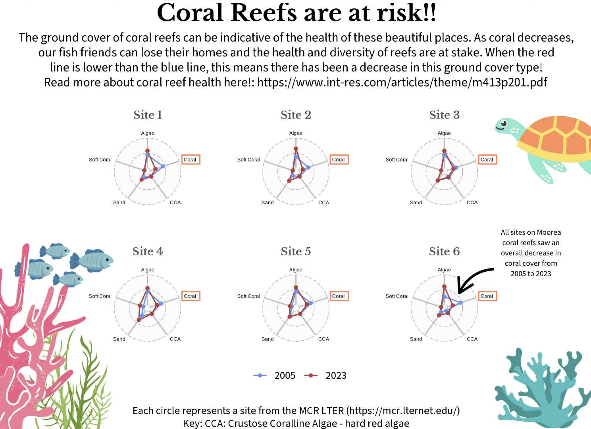
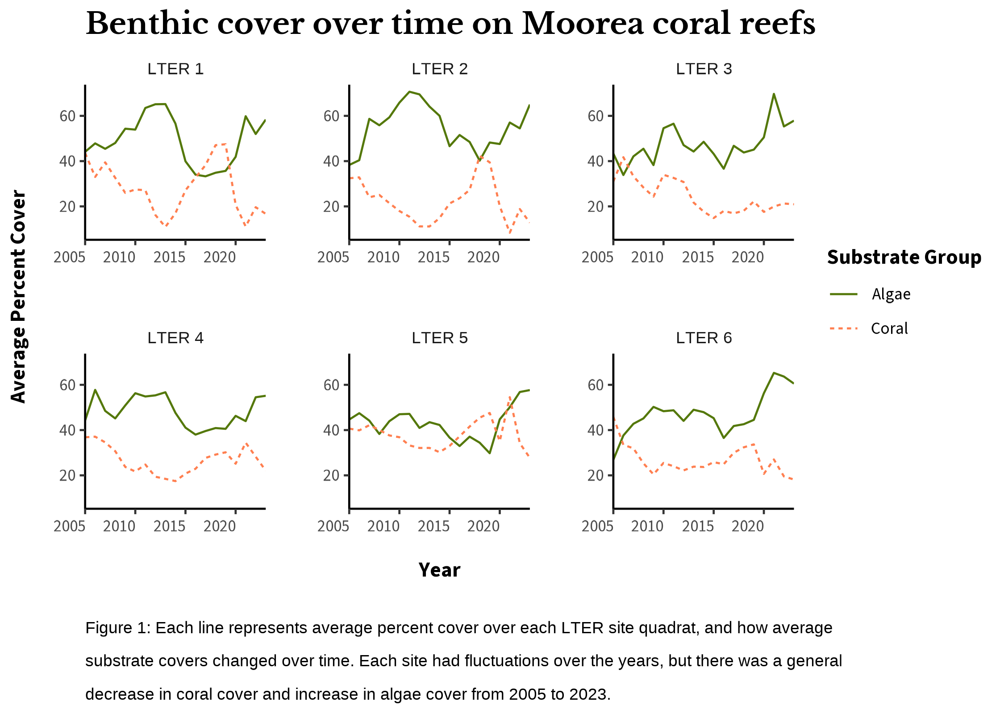
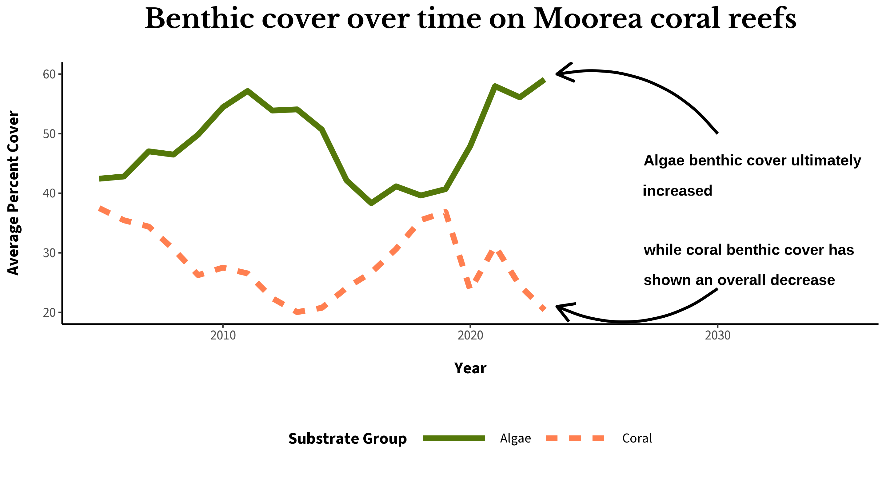

The purpose of this assignment is to create three visualizations to answer a question about Moorea coral reefs (MCR) for a general non-scientific audience, a publication, and a presentation.
**Note: Upon revisiting this blog post months later, ggradar has not been updated and was not compatible with updated R versions so all of the ggradar code is commented out now, but the resulting graph is still shown.
This dataset was collected by the MCR Long Term Ecological Research (LTER) group and includes data collected from yearly surveys (2005-2023) of benthic cover on coral reefs in Moorea. The variables include: Year, Date, Location, Site, Habitat, Transect, Quadrat, Taxonomy Substrate Functional Group, and Percent Cover. This project will only be looking at year, site, substrate group, and percent cover.
Question
The question I am asking with this data is whether benthic structure on MCR LTER has changed over time. This question will focus on coral and algae benthic cover. These substrate types are significant as they can exist as alternative stable states in these ecosystems.
Highlights
Data Preparation
Plot 1: general audience
Plot 2: publication
Plot 3: presentation
Discussion on plot choices
Data Preparation
This is the code that I used to clean and prepare the data for plotting.
Load in and Clean Data
Code
# read in the data ----benthic_data <-read_csv("https://cn.dataone.org/cn/v2/resolve/https%3A%2F%2Fpasta.lternet.edu%2Fpackage%2Fdata%2Feml%2Fknb-lter-mcr%2F8%2F36%2F54d54c25616a48b9ec684118df9d6fca")# clean up data ----benthic_data_clean <- benthic_data %>% janitor::clean_names() %>%# clean names to lower snake caseselect(year, site, quadrat, transect, taxonomy_substrate_functional_group, percent_cover) %>%# select only relevant columnsrename(substrate_group = taxonomy_substrate_functional_group) %>%# rename to shorter name for ease of usefilter(percent_cover !=0) %>%# remove all 0 values from percent coverfilter(substrate_group %in%c("Coral", "Crustose Corallines", "Sand", "Soft Coral", "Algal Turf")) # only select the obvious substrate group# change algal turf to algaebenthic_data_clean$substrate_group <-case_when( benthic_data_clean$substrate_group %in%c("Algal Turf") ~"Algae",TRUE~ benthic_data_clean$substrate_group)# load in fonts ----font_add_google(name ="Libre Baskerville", family ="baskerville")font_add_google(name ="Nunito", family ="nunito")font_add_google(name ="Source Sans 3", family ="Source")showtext_auto()
Prepare Data for Plot 1
Code
## create dataframes for plots ----# LTER1:LTER1_radar <- benthic_data_clean %>%filter(site =="LTER 1", year %in%c(2005, 2023)) %>%# select observations from LTER1 from the years 2005 and 2023group_by(substrate_group, year) %>%summarise(avg_cover =mean(percent_cover)) %>%# get averagesmutate(avg_cover = (avg_cover*.01)) %>%# convert to scale from 0-1pivot_wider(names_from = substrate_group, values_from = avg_cover) %>%# make each substrate group its own columnmutate(soft_coral =0) %>%# it took soft coral out so add it backrename("Soft Coral"= soft_coral,"CCA"="Crustose Corallines") # rename for consistency# LTER2:LTER2_radar <- benthic_data_clean %>%filter(site =="LTER 2", year %in%c(2005, 2023)) %>%# select observations from LTER2 from the years 2005 and 2023group_by(substrate_group, year) %>%summarise(avg_cover =mean(percent_cover)) %>%# get averagesmutate(avg_cover = (avg_cover*.01)) %>%pivot_wider(names_from = substrate_group, values_from = avg_cover) %>%# make each substrate group its own columnmutate(soft_coral =0) %>%# it took soft coral out so add it backrename("Soft Coral"= soft_coral,"CCA"="Crustose Corallines") # rename for consistency# LTER3: LTER3_radar <- benthic_data_clean %>%filter(site =="LTER 3", year %in%c(2005, 2023)) %>%# select observations from LTER2 from the years 2005 and 2023group_by(substrate_group, year) %>%summarise(avg_cover =mean(percent_cover)) %>%# get averagesmutate(avg_cover = (avg_cover*.01)) %>%pivot_wider(names_from = substrate_group, values_from = avg_cover) %>%# make each substrate group its own columnmutate(soft_coral =0) %>%# it took soft coral out so add it backrename("Soft Coral"= soft_coral,"CCA"="Crustose Corallines")# rename for consistency# LTER4: LTER4_radar <- benthic_data_clean %>%filter(site =="LTER 4", year %in%c(2005, 2023)) %>%# select observations from LTER2 from the years 2005 and 2023group_by(substrate_group, year) %>%summarise(avg_cover =mean(percent_cover)) %>%# get averagesmutate(avg_cover = (avg_cover*.01)) %>%pivot_wider(names_from = substrate_group, values_from = avg_cover) %>%# make each substrate group its own columnrename("CCA"="Crustose Corallines")# LTER5:LTER5_radar <- benthic_data_clean %>%filter(site =="LTER 5", year %in%c(2005, 2023)) %>%# select observations from LTER2 from the years 2005 and 2023group_by(substrate_group, year) %>%summarise(avg_cover =mean(percent_cover)) %>%# get averagesmutate(avg_cover = (avg_cover*.01)) %>%pivot_wider(names_from = substrate_group, values_from = avg_cover) %>%# make each substrate group its own columnrename("CCA"="Crustose Corallines")# LTER6: LTER6_radar <- benthic_data_clean %>%filter(site =="LTER 6", year %in%c(2005, 2023)) %>%# select observations from LTER2 from the years 2005 and 2023group_by(substrate_group, year) %>%summarise(avg_cover =mean(percent_cover)) %>%# get averagesmutate(avg_cover = (avg_cover*.01)) %>%pivot_wider(names_from = substrate_group, values_from = avg_cover) %>%# make each substrate group its own columnmutate(soft_coral =0) %>%# it took soft coral out so add it backrename("Soft Coral"= soft_coral,"CCA"="Crustose Corallines") # rename for consistencyLTER6_radar[is.na(LTER6_radar)] <-0# one value will not plot bc it is NA, change to 0
Prepare Data for Plot 2
Code
# summarise cover data by substrate group and yearbenthic_data_time <- benthic_data_clean %>%group_by(year, substrate_group, site) %>%summarise(avg_cover =mean(percent_cover)) %>%filter(substrate_group %in%c("Algae", "Coral"))
Prepare Data for Plot 3
Code
# summarise cover data by substrate group and yearbenthic_data_presentation <- benthic_data_clean %>%group_by(year, substrate_group) %>%summarise(avg_cover =mean(percent_cover)) %>%filter(substrate_group %in%c("Algae", "Coral")) # select only these substrate groups
Plot 1: general audience
Code
# make LTER plots for final plot ----# LTER1 PLOT# LTER1_plot <- ggradar(LTER1_radar,# axis.label.size = 5, # edit radar text sizing and colors# grid.label.size = 6,# grid.line.width = 0.2,# group.line.width = 0.5,# group.point.size = 1,# base.size = 20,# label.gridline.min = FALSE,# label.gridline.mid = FALSE,# label.gridline.max = FALSE, # group.colours = c("cornflowerblue", "#ba3c3c"),# background.circle.colour = "grey",# background.circle.transparency = 0.06,# gridline.min.colour = "darkgrey",# gridline.mid.colour = "darkgrey",# gridline.max.colour = "darkgrey") +# theme_void() +# xlim(-2,2) +# labs(title = "Site 1") + # rename title# theme(plot.title = element_text(family = "baskerville", hjust = 0.5, size = 30, color = "#555755", face = "bold"), # change title font and size# legend.position = "none", # remove legend # plot.margin = margin(0.25,0.25,0.25,0.25,"cm")) + # add padding # annotate('rect', xmin = 1.15, xmax = 1.75, ymin = 0.25, ymax = 0.55, alpha = 0, col = 'coral', lwd = 0.5) # rectangle to emphasize main group# LTER2 PLOT# LTER2_plot <- ggradar(LTER2_radar,# axis.label.size = 5, # edit radar text sizing and colors# grid.label.size = 6,# grid.line.width = 0.2,# group.line.width = 0.5,# group.point.size = 1,# label.gridline.min = FALSE,# label.gridline.mid = FALSE,# label.gridline.max = FALSE,# group.colours = c("cornflowerblue", "#ba3c3c"),# background.circle.colour = "grey",# background.circle.transparency = 0.06,# gridline.min.colour = "darkgrey",# gridline.mid.colour = "darkgrey",# gridline.max.colour = "darkgrey") +# theme_void() +# xlim(-2,2) +# labs(title = "Site 2") + # rename title# theme(plot.title = element_text(family = "baskerville", hjust = 0.5, size = 30, color = "#555755", face = "bold"), # change title font and size# legend.position = "none", # remove legend # plot.margin = margin(0.25,0.25,0.25,0.25,"cm")) +# annotate('rect', xmin = 1.15, xmax = 1.75, ymin = 0.25, ymax = 0.55, alpha = 0, col = 'coral', lwd = 0.5) # LTER3 PLOT# LTER3_plot <- ggradar(LTER3_radar,# axis.label.size = 5, # edit radar text sizing and colors# grid.label.size = 6,# grid.line.width = 0.2,# group.line.width = 0.5,# group.point.size = 1, # label.gridline.min = FALSE,# label.gridline.mid = FALSE,# label.gridline.max = FALSE,# group.colours = c("cornflowerblue", "#ba3c3c"),# background.circle.colour = "grey",# background.circle.transparency = 0.06,# gridline.min.colour = "darkgrey",# gridline.mid.colour = "darkgrey",# gridline.max.colour = "darkgrey") +# theme_void() +# xlim(-2,2) +# labs(title = "Site 3") + # rename title# theme(plot.title = element_text(family = "baskerville", hjust = 0.5, size = 30, color = "#555755", face = "bold"), # change title font and size# legend.position = "none", # remove legend# plot.margin = margin(0.25,0.25,0.25,0.25,"cm")) +# adjust title text# annotate('rect', xmin = 1.15, xmax = 1.75, ymin = 0.25, ymax = 0.55, alpha = 0, col = 'coral', lwd = 0.5) # LTER4 PLOT# LTER4_plot <- ggradar(LTER4_radar,# axis.label.size = 5, # edit radar text sizing and colors# grid.label.size = 6,# grid.line.width = 0.2,# group.line.width = 0.5,# group.point.size = 1, # label.gridline.min = FALSE,# label.gridline.mid = FALSE,# label.gridline.max = FALSE,# group.colours = c("cornflowerblue", "#ba3c3c"),# background.circle.colour = "grey",# background.circle.transparency = 0.06,# gridline.min.colour = "darkgrey",# gridline.mid.colour = "darkgrey",# gridline.max.colour = "darkgrey") +# theme_void() +# xlim(-2,2) +# labs(title = "Site 4") + # rename title# theme(plot.title = element_text(family = "baskerville", hjust = 0.5, size = 30, color = "#555755", face = "bold"), # change title font and size# legend.position = "none", # remove legend# plot.margin = margin(0.25,0.25,0.25,0.25,"cm")) +# adjust title text# annotate('rect', xmin = 1.15, xmax = 1.75, ymin = 0.25, ymax = 0.55, alpha = 0, col = 'coral', lwd = 0.5) # LTER5 PLOT# LTER5_plot <- ggradar(LTER5_radar,# axis.label.size = 5, # edit radar text sizing and colors# grid.label.size = 6,# grid.line.width = 0.2,# group.line.width = 0.5,# group.point.size = 1, # label.gridline.min = FALSE,# label.gridline.mid = FALSE,# label.gridline.max = FALSE,# group.colours = c("cornflowerblue", "#ba3c3c"),# background.circle.colour = "grey",# background.circle.transparency = 0.06,# gridline.min.colour = "darkgrey",# gridline.mid.colour = "darkgrey",# gridline.max.colour = "darkgrey") +# theme_void() +# xlim(-2,2) +# labs(title = "Site 5") + # rename title# theme(plot.title = element_text(family = "baskerville", hjust = 0.5, size = 30, color = "#555755", face = "bold"), # change title font and size# legend.position = "bottom",# legend.key.height = unit(1, 'cm'), #change legend key height# legend.key.width = unit(0.5, 'cm'),# plot.margin = margin(0.25,0.25,0.25,0.25,"cm"),# legend.text = element_text(family = "Source", size = 30)) +# adjust title text# annotate('rect', xmin = 1.15, xmax = 1.75, ymin = 0.25, ymax = 0.55, alpha = 0, col = 'coral', lwd = 0.5) # LTER6 PLOT# LTER6_plot <- ggradar(LTER6_radar,# axis.label.size = 5, # edit radar text sizing and colors# grid.label.size = 6,# grid.line.width = 0.2,# group.line.width = 0.5,# group.point.size = 1, # label.gridline.min = FALSE,# label.gridline.mid = FALSE,# label.gridline.max = FALSE,# group.colours = c("cornflowerblue", "#ba3c3c"),# background.circle.colour = "grey",# background.circle.transparency = 0.06,# gridline.min.colour = "darkgrey",# gridline.mid.colour = "darkgrey",# gridline.max.colour = "darkgrey") +# theme_void() + # xlim(-2,2) +# labs(title = "Site 6") + # rename title# theme(text = element_text(family = "Source"), # plot.title = element_text(family = "baskerville", hjust = 0.5, size = 30, color = "#555755", face = "bold"), # change title font and size# legend.position = "none", # remove legend# plot.margin = margin(0.5,0.25,0.25,0.25,"cm")) + # adjust title text# annotate('rect', xmin = 1.15, xmax = 1.75, ymin = 0.25, ymax = 0.55, alpha = 0, col = 'coral', lwd = 0.5) # ----------------------------------------------------------------------# add plots together ----# plot1 <- (LTER1_plot + LTER2_plot + LTER3_plot + LTER4_plot + LTER5_plot + LTER6_plot) +# # plot_layout(ncol = 3) + # three columns so 3 and 3# # plot_annotation(title = "Coral Reefs are at risk!!", # add texts# subtitle = "The ground cover of coral reefs can be indicative of the health of these beautiful places. As coral decreases,\nour fish friends can lose their homes and the health and diversity of reefs are at stake. When the red\nline is lower than the blue line, this means there has been a decrease in this ground cover type!\nRead more about coral reef health here!: https://www.int-res.com/articles/theme/m413p201.pdf",# caption = "Each circle represents a site from the MCR LTER (https://mcr.lternet.edu/)\nKey: CCA: Crustose Coralline Algae - hard red algae",# theme = theme(plot.title = element_text(family = "baskerville",# face = "bold",# hjust = 0.5,# size = 65),# plot.subtitle = element_text(family = "Source", # edit text# size = 35, # hjust = 0.5,# lineheight = 0.3),# plot.margin = margin(0.2, 1, 0.2, 1),# plot.caption = element_text(family = "Source",# size = 30,# hjust = 0.5,# lineheight = 0.3)# )) +# # annotate('curve', x = 1.66, y = 1.3, yend = 0.5, xend = 0.5, linewidth = 1, curvature = 0.3, arrow = arrow(length = unit(0.5, 'cm'))) # add arrow# # # ------------------------------------------------------------# # save plot ----# #........open plotting device to draw plot to a PNG file.........# # specify file path/name and png resolution & size# ragg::agg_png(here::here("blog", "2024-03-12-eds240-hw4", paste0("plot1", ".png")), # res = 320, width = 7, height = 5, units = "in")# # #................plot object that you want to draw...............# plot1# # #....................turn off plotting device....................# # once off, you should see your .png file appear in outputs/ folder# dev.off()
Here is my final visualization for a general audience (I did some editing in canva):

Plot 2: publication
Code
# color palettecoral_colors <-c("#54780a", "coral")# plot all substrate groups over timeplot2 <-ggplot(benthic_data_time) +geom_line(aes(x = year, y = avg_cover, color = substrate_group, group = substrate_group, linetype = substrate_group)) +# make theme cleanertheme_classic() +# add text and fix legendlabs(title ="Benthic cover over time on Moorea coral reefs", color ="Substrate Group",y ="Average Percent Cover",x ="Year",color ="Substrate Group", linetype ="Substrate Group",caption ="Figure 1: Each line represents average percent cover over each LTER site quadrat, and how average\nsubstrate covers changed over time. Each site had fluctuations over the years, but there was a general\ndecrease in coral cover and increase in algae cover from 2005 to 2023.") +# set new x limits xlim(2005,2023) +# custom colorsscale_color_manual(values = coral_colors) +# lots of text editing, fonts, paddingtheme(text =element_text(size =35), axis.text.x =element_text(vjust =0.5, hjust=1),plot.title =element_text(family ="baskerville", size =50, face ="bold"),legend.title =element_text(family ="Source", face ="bold"),legend.text =element_text(family ="Source"),axis.text =element_text(family ="Source"),axis.title =element_text(family ="Source", face ="bold"),plot.caption =element_text(hjust =0, lineheight =0.5),axis.title.y =element_text(angle =90, margin =margin(r =15)),axis.title.x =element_text(margin =margin(t =15, b =15)),strip.background =element_blank(),panel.spacing =unit(2, "lines")) +scale_x_continuous(expand =c(0, 0)) +facet_wrap(~site, axes ="all") # ------------------------------------------------------# save plot ----#........open plotting device to draw plot to a PNG file.........# specify file path/name and png resolution & sizeragg::agg_png(here::here("blog", "2024-03-12-eds240-hw4", paste0("plot2", ".png")), res =320, width =7, height =5, units ="in")#................plot object that you want to draw...............plot2#....................turn off plotting device....................# once off, you should see your .png file appear in outputs/ folderdev.off()
quartz_off_screen
2
Here is my final visualization for a publication:

Plot 3: presentation
Code
# plot time series of substrate coverplot3 <-ggplot(benthic_data_presentation) +geom_line(aes(x = year, y = avg_cover, color = substrate_group, group = substrate_group, linetype = substrate_group), lwd =2) +theme_classic() +labs(title ="Benthic cover over time on Moorea coral reefs",color ="Substrate Group",y ="Average Percent Cover",x ="Year",color ="Substrate Group", linetype ="Substrate Group") +scale_color_manual(values = coral_colors) +scale_x_continuous(expand =c(0, 0)) +theme(text =element_text(size =40),plot.title =element_text(family ="baskerville", size =65, face ="bold", hjust =0.5, margin =margin(b =20)),legend.title =element_text(family ="Source", face ="bold"),legend.text =element_text(family ="Source"),axis.text =element_text(family ="Source"),axis.title =element_text(family ="Source", face ="bold"),legend.position ="bottom",axis.title.x =element_text(margin =margin(t =15)),axis.title.y =element_text(margin =margin(r =15)),legend.key.height =unit(2, 'cm'), #change legend key heightlegend.key.width =unit(2, 'cm')) +xlim(2005, 2035) +annotate('curve', x =2030, y =50, yend =60, xend =2023.5, linewidth =1, curvature =0.3, arrow =arrow(length =unit(0.5, 'cm'))) +annotate('curve', x =2030, y =24, yend =21, xend =2023.5, linewidth =1, curvature =-0.3, arrow =arrow(length =unit(0.5, 'cm'))) +annotate('text', x =2027, y =43, label ='Algae benthic cover ultimately\nincreased', fontface ='bold', size =13, hjust =0, lineheight =0.5) +annotate('text', x =2027, y =28, label ='while coral benthic cover has\nshown an overall decrease', fontface ='bold', size =13, hjust =0, lineheight =0.5) # ---------------------------------------------------------------------# save plot ----#........open plotting device to draw plot to a PNG file.........# specify file path/name and png resolution & sizeragg::agg_png(here::here("blog", "2024-03-12-eds240-hw4", paste0("plot3", ".png")), res =320, width =9, height =5, units ="in")#................plot object that you want to draw...............plot3#....................turn off plotting device....................# once off, you should see your .png file appear in outputs/ folderdev.off()
quartz_off_screen
2
Here is my final visualization for a presentation:

Discussion on Plot Choices
Graphic Form
For the graph geared toward the general audience, I decided to create radar charts. I think that radar charts look very interesting and draw the eye. I think a line chart for a plot geared toward a general audience would have looked too plain and “boring”. I think because line charts can be seen as the typical “scientific” or “math-y” types of plots it might seem less interesting to people. Even though radar charts may not be as intuitive as line charts or bar charts, which are more common, I think they add an artistic element to a visualization. A lot of my favorite examples I’ve seen so far have been a series of radar charts. Because this visualization can look slightly more artistic than for a publication or presentation, I stuck to a set of radar charts.
While the radar charts for a general audience show an overall result of 2005 to 2023 rather than all the years between. I wanted to use a time series line chart for the publication because scientists would be able to see more nuanced trends throughout all the years. Rather than from just 2005 and 2023. The accompanying paper would explain these patterns, perhaps indicating other global factors that may be driving the trends. They would be able to reference these plots by site and year.
For the presentation graph, I wanted to do something similar to the publication graph, but instead of facet wrapping by site (this makes it harder to look at quickly), I decided to do the average trend over all sites for one large time series graph.
Text
The title for the general audience plot is more explanatory than the other graphs because it is a standalone plot versus being accompanied by a paper or speech. I tried to avoid scientific jargon such as “benthic” so an average person would be able to relate to the message more. The titles of the other plots just say exactly what it is. I avoided plot annotations for my graph for publication due to the fact that everything can be explained in the paper, and this plot contains a figure caption which all publication graphs have. I added text annotations to the presentation visualization to explain simple observations, but avoided explaining too much because I did not want to make it too visually crowded. The more complex patterns in this plot can be explained by the presenter. All axis text is exactly what it means. I was wary of the axis text in the radar charts, but ultimately decided to keep it.
Themes
All plots are plain, and only the radar charts have gridlines. I didn’t think that the gridlines were necessary since the plot portrays general trends, and it is not too important to be able to match up very specific years to points. Plain backgrounds make plots cleaner and very easy to read. I adjusted the padding for all graphs to increase distance between text and other graphs. This makes graphs easier to interpret without elements being too squished together. Title texts were all bolded to draw more attention and stand apart from the rest of the graph more. I used Libre Baskerville for title text and Source Sans 3 for body text because I found this pairing from fontpair and thought that it looked nice and classy.
Colors
The colors I chose for the radar chart were a muted blue and red because I think these are very contradictory and it is easy to distinguish them from each other. I did not use the default red and blue because I think these are very bright and hurt the eyes sometimes. For the other plots, I chose coral color to represent the coral lines and used a green to represent the algae lines. I think this is intuitive to most people since most people think algae is green and the color coral is self explanatory. I liked that the colors matched what it was representing. All text is black or dark grey, which are easy to read and not too distracting.
Typography
I touched on fonts I used in the section above, but ultimately I used a font pairing that I really liked from fontpair. I like serif fonts being titles and sans-serif for body text so I followed this pattern. I used the same font combination for all plots because I think it looks clean and classy.
General Design
All plots with multiple sites are ordered numerically since all plots contain numbers in their names. I added padding between most elements to make sure that nothing was too crowded and to make it easier to look at. For the presentation graph, I also made the linewidth and text thicker to make all elements easier to see. I touched on some of the general design elements above as well.
Contextualizing Your Data
Most of the contextualization of my data is in the first two plots with annotations and captions. I did not go into any technical detail for plot 1 because it is for a general audience, and for plots 2 and 3, I figured that the explanation of data/wrangling/workflow would be described in the paper and during a presentation. I tried to keep the last one as simple as possible because I figured that this graph would be supplemented by verbal explanations and descriptions as well.
Centering Your Primary Message
All graphs are right in the middle of all text. I think this is the first thing that your eyes look at, and then you look around for more information. I think the trends that are on the graphs are the main message, and then the viewer can look at the surrounding text for more context
Considering Accessibility
I tried to add more contrast in the text by bolding and not bolding to make the main text easier to read. Unfortunately, I believe that the colors that I used for the last two plots were not color blind friendly. To make up for this, I used different linetypes for the two groups, so if someone is not able to distinguish the colors, they would be able to distinguish the line types.
Applying a DEI Lens to Your Design
Because my data handles very objective environmental data, I did not do a lot to consider how this data is represented from a DEI lens. This data is not directly portraying any communities or people, and the questions I posed for this assignment, is very observational and I did not see it as affecting any individuals or communities negatively. I am open to other thoughts on this point of view though!